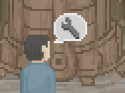

01. 基本信息
目前总共有 198 个工具事件, 它们包罗万象, 基本上涵盖了除行驶事件和剧情事件之外的所有内容, 你通过屏幕左右两侧按钮点击的功能和后续选项, 以及在游戏地图中踩到的那些特殊点等等, 都是由工具事件所提供的, XJ 根据这些事件的类型和触发条件等, 将其简单的分为: "野外操作/安全城市/特殊事件/感染据点/后续内容/地图交互/废弃工具" 7 种类型, 了解它们能让你在废土更加随心所欲.
事件提到的"休息时间"并不等于"休息参数", 前者是耗费的时间, 后者是效果参数, 疲劳减少的细节为: ((是否扎营 ? ((基础回复(默认为 4) + 角色特质(深度睡眠者或失眠等)) * (休息参数/60) * 3) : 1) + (卡车舒适度 * (休息参数/60)) + ((基础回复(默认为 5) + 角色特质(深度睡眠者或失眠等)) * 扎营增值(扎营时为 3, 不扎营时为 1) * (休息参数/60)) * 车辆配件提供的休息效果的百分比.
具体来讲就是不开车或不战斗或不劳动的角色并不会涨疲劳, 休息时, 扎营休息能恢复更多的疲劳, 在旅店或特殊事件的休息, 也是使用卡车的舒适度进行计算, 通常休息是不减压力的, 除非角色拥有觉皇等特质, 或事件有额外设置减压参数, 但机器人睡觉起码可以 -10 压力, 不过机器人睡觉并不会恢复疲劳, 即使有觉皇或常做好梦这类特质也不会恢复疲劳, 总之, 如何休息是件颇为复杂的事情就对了.
事件提到的"战斗"和"感染参数"等内容会影响到敌人类型和最终战力, 以及战胜之后的战利品或战败之后的下场, 关于战斗相关的细节可参考 敌军情报.html # 04.战斗机制, 此外, 为了简化内容, 所以我们用了一些代码的写法表示逻辑, 例如 || 既"或者"的意思, && 既"并且"的意思, 最后, 为了方便总览和避免剧透, 我们将事件详情折叠了起来, 你可以通过点击标题或下面的按钮来展开或关闭内容.
通过点击按钮来操作所有事件:
02. 野外操作
01. 扎营...
 代码: 900
代码: 900
模式: 侧边栏
条件: 复合的条件
条件细节: (不在扎营状态 && 状态参数等于允许扎营 &&
(在停车状态 || 当前城市可以转入地下 || 当前城市可以转到地面 || 当前城市可以进入遗迹));
事件结果: (if(不在酒馆范围){ 进行扎营, 耗时 60 分钟, 进入扎营状态 }
else{ 我们刚准备扎营就被一群人叫住了, 他们说这里是禁止停放区域, 要休息请去城里酒店 });
02. 营地: 我们扎了营, 围坐在一起...
 代码: 936
代码: 936
模式: 侧边栏
条件: 复合的条件
条件细节: (在扎营状态 || (在据点里面 && 当前城市是自建城));
# 选项01: 派对(触发 # 派对);
# 选项02: 分享见闻(成员数量多于 1 / 耗时 30 分钟 / 角色聊天);
# 选项03: 鱼水之欢(成员数量多于 1 / 耗时 90 分钟 / 无效也会显示选项 / 执行鱼水之欢);
# 选项04: 维修人造人(成员有复制人 / 存在任务 死者国度.html # 维修克隆人 / 耗时 30 分钟 / 触发 死者国度.html # 修理);
# 选项05: 算了;
03. 派对: 为了回复大家的士气, 我们决定办个派对, 不过最好确定这里是安全的(可回复心情)...
代码: 9246
模式: 对话框
条件: 在扎营状态
# 选项01: 烤肉派对(按成员数拥有 4 口粮 50 汽油 / 按成员数失去 4 口粮 50 汽油 / 耗时 90 分钟 / 所有成员 -90 压力);
# 选项02: 演出派对(无效隐藏选项 / 某个成员拥有"表演者"特性 /
if(成员数量少于 2){ 一个人是要表演给谁看呢 }
else if(所有成员饥饿大于 300 || 疲劳大于 50){ 大家有点累, 体力不足没法打 call }
else{ 耗时 60 分钟, 这次演出相当不错, 为大家带来了很多的欢乐, 大家打 call 也很累, 所有成员 -50 压力, +40 疲劳 });
# 选项03: 还是算了;
04. 厨房: 是要烧水呢, 还是要做饭...
代码: 952
模式: 侧边栏
条件: 在扎营状态
# 选项01: 烹饪(打开烹饪界面, 无需任何燃料);
# 选项02: 煤窑(触发 # 煤窑);
# 选项03: 离开;
05. 煤窑: 做点什么...
代码: 9265
模式: 对话框
条件: 在扎营状态
# 选项01: 烧水(拥有 180 汽油, 拥有 12 脏水 / 失去 180 汽油, 失去 12 脏水 / 获得 12 水 / 耗时 30 分钟);
# 选项02: 净水(拥有 3 木炭, 拥有 15 脏水 / 失去 3 木炭, 失去 15 脏水 / 获得 15 水 / 耗时 90 分钟);
# 选项03: 过滤(拥有 1 净水器, 拥有 28 脏水 / 失去 1 净水器, 失去 28 脏水 / 获得 28 水);
# 选项04: 烧炭(拥有 8 木材 / 失去 8 木材 / 获得 8 木炭 / 耗时 120 分钟 / 用于净水);
# 选项05: 离开;
06. 睡觉...
代码: 909
模式: 侧边栏
条件: 在扎营状态
事件结果: (if(耗时 120 分钟){ 休息:休息参数=200 }else{ 假如休息被打断了, 休息:休息参数=75 });
01. 停车...
代码: 907
模式: 侧边栏
条件: 在开车状态
事件结果: (停车);
02. 出发...
代码: 902
模式: 侧边栏
条件: 停车或扎营
事件结果: (出发);
01. 天气预报...
代码: 938
模式: 侧边栏
条件: 地表且野外
事件结果: (获取天气信息);
02. 修理卡车...
代码: 908
模式: 侧边栏
条件: 停车或扎营
事件结果: (打开车厂界面);
03. 引擎降温...
代码: 903
模式: 侧边栏
条件: 停车或扎营
事件结果: (打开降温界面);
04. 查看轮胎...
代码: 904
模式: 侧边栏
条件: 停车或扎营
事件结果: (打开轮胎界面);
05. 看日出...
代码: 945
模式: 侧边栏
条件: 复合的条件
条件细节: (不在据点里 && 不是在地下 && 是晴天状态 && 处于 06:00~07:00 之间);
事件结果: (很美的朝阳, 令人心情舒畅, 停车, 耗时 60 分钟, 所有成员 -35 压力);
06. 看日落...
代码: 946
模式: 侧边栏
条件: 复合的条件
条件细节: (不在据点里 && 不是在地下 && 是晴天状态 && 处于 17:00~18:00 之间);
事件结果: (很美的夕阳, 令人心情舒畅, 停车, 耗时 60 分钟, 所有成员 -35 压力);
07. 看月亮...
代码: 947
模式: 侧边栏
条件: 复合的条件
条件细节: (不在据点里 && 不是在地下 && 是晴天状态 && 处于 20:00~23:00 之间);
事件结果: (月色很美, 真想一直看下去, 停车, 耗时 90 分钟, 所有成员 -20 压力);
08. 休息...
代码: 901
模式: 侧边栏
条件: 在停车状态
事件结果: (if(扎营状态){ 休息:休息参数=200 }
else{ 假如休息被打断了, 休息:休息参数=75 });
09. 鸣笛...
代码: 944
模式: 侧边栏
条件: 复合的条件
条件细节: (不在据点里面 && 不在城市范围内 && 不在扎营状态中);
事件结果: (播放卡车叭叭叭的声音既 RingCar, 危险度稍微上升了);
————
01. 收集雨水...
代码: 932
模式: 侧边栏
条件: 复合的条件
条件细节: ((在停车状态 || 在扎营状态) && (是小雨状态 || 是暴雨状态) && 当前不在地下);
事件结果: (if(是小雨状态){ 耗时 50 分钟, 获得 4/5/6 脏水, 有雨水收集器时再获得 1 水 }
else if(是暴雨状态){ 耗时 120 分钟, 获得 8/9/10 脏水, 有雨水收集器时可再获得 2 水 });
01. 资源: 森林里资源很丰富, 我们要做什么呢...
代码: 932
模式: 侧边栏
条件: 复合的条件
条件细节: ((在停车状态 || 在扎营状态) && 状态参数变为可以采集 && 当前不在地下);
# 选项01: 采集(状态参数变为可以采集 / if(耗时 90 分钟){ 采集资源 }else{ 这片地区资源贫瘠, 不像是能找到食物的样子 });
# 选项02: 伐木(团队手工大于 7 / if(所有成员饥饿和疲劳均小于 50){ 按成员数获得 7 木材, 耗时 150 分钟, 所有成员 +50 疲劳 }else{ 团队未处于最佳状态, 先吃饱或休息好再来吧 });
# 选项03: 离开;
02. 汲水: 河流水资源很丰富, 我们要做什么呢...
代码: 933
模式: 侧边栏
条件: 复合的条件
条件细节: ((在停车状态 || 在扎营状态) && 状态参数等于可以汲水 && 当前不在地下);
# 选项01: 汲水(状态参数等于可汲水, if(下雨){ 获得 15/16/18 脏水(耗时 50 分钟) }
else{ 获得 6/7/9 脏水(耗时 120 分钟) });
# 选项02: 离开;
03. 钓鱼: 河流水资源很丰富, 我们要做什么呢...
代码: 953
模式: 侧边栏
条件: 复合的条件
条件细节: ((在停车状态 || 在扎营状态) && 状态参数变为可以钓鱼 && 当前不在地下);
# 选项01: 钓鱼, 需布置场地(状态参数变为可以钓鱼 / 耗时 30 分钟 / 打开钓鱼界面);
# 选项02: 离开;
01. 地下资源: 地下的原始森林能找到很多资源...
代码: 960
模式: 侧边栏
条件: 复合的条件
条件细节: ((在停车状态 || 在扎营状态) && 状态参数变为可以采集 && 当前正在地下);
# 选项01: 采集(状态参数变为可以采集 / if(耗时 90 分钟){ 采集资源 }else{ 这片地区资源贫瘠, 不像是能找到食物的样子 });
# 选项02: 伐木(团队手工大于 7 / if(耗时 180 分钟 + 伐木的过程没有被打断){ 按成员数获得 2 木材 }else{ 获得 1 木材 });
# 选项03: 离开;
02. 地下汲水: 地下河潺潺流淌, 我们要做什么...
代码: 959
模式: 侧边栏
条件: 复合的条件
条件细节: ((在停车状态 || 在扎营状态) && 状态参数等于可以汲水 && 当前正在地下);
# 选项01: 汲水(状态参数等于可汲水, if(下雨){ 获得 15/16/18 脏水(耗时 50 分钟) }
else{ 获得 6/7/9 脏水(耗时 120 分钟) });
# 选项02: 离开;
03. 地下钓鱼: 地下河潺潺流淌, 我们要做什么...
代码: 961
模式: 侧边栏
条件: 复合的条件
条件细节: ((在停车状态 || 在扎营状态) && 状态参数变为可以钓鱼 && 当前正在地下);
# 选项01: 钓鱼, 需布置场地(状态参数变为可以钓鱼 / 耗时 30 分钟 / 打开钓鱼界面);
# 选项02: 离开;
01. 打猎: 森林里资源很丰富, 我们要做点什么...
代码: 955
模式: 侧边栏
条件: 在枯树林中
条件细节: (没有任务 # 追踪猎物 && 状态参数变为可以狩猎) && (在停车状态 || 在扎营状态) && (不在地下);
# 选项01: 打猎(无效隐藏选项 / 没有任务 # 追踪猎物 / 状态参数变为可以狩猎);
1/1 概率: 触发 # 森林打猎;
# 选项02: 离开;
02. 森林打猎: 仔细搜寻应该能找到动物的踪迹...
代码: 9186
模式: 对话框
条件: 无限制条件
# 选项01: 搜寻踪迹(耗时 50 分钟);
1/1 概率: (if(追踪失败){ 在树林里转了很久, 连动物的影子都没有看见 }
else{ 我们发现了一些动物的足迹和粪便, 他们应该就在不远处, 获得任务 # 追踪猎物, 延迟 900 分钟触发 # 猎物逃走 });
# 选项02: 和小动物说话(某个成员拥有"动物密友"特性 / 无效隐藏选项);
1/1 概率: 和森林里的小动物交流后, 我们发现了大型动物的踪迹(获得任务 # 追踪猎物, 延迟 900 分钟触发 # 猎物逃走);
# 选项03: 离开;
01. 地下打猎: 地下森林资源丰富, 要做点什么...
代码: 962
模式: 侧边栏
条件: 在地下沼泽
条件细节: (没有任务 # 地下追猎 && 状态参数变为可以狩猎) && (在停车状态 || 在扎营状态) && (正在地下);
# 选项01: 打猎(无效隐藏选项 / 没有任务 # 地下追猎 / 状态参数变为可以狩猎);
1/1 概率: 触发 # 地下森林打猎;
# 选项02: 离开;
02. 地下森林打猎: 仔细搜寻应能找到动物踪迹...
代码: 11114
模式: 对话框
条件: 无限制条件
# 选项01: 搜寻踪迹(耗时 50 分钟);
1/1 概率: (if(追踪失败){ 在原始森林里转了很久, 却连影子都没有看见 }
else{ 我们发现了一些地下动物的踪迹, 它们应该就在不远处了, 获得任务 # 地下追猎, 延迟 900 分钟触发 # 失去目标 });
# 选项02: 和小动物说话(某个成员拥有"动物密友"特性 / 无效隐藏选项);
1/1 概率: 和地下的小动物交流之后, 我们发现了更多生物的踪迹(获得任务 # 地下追猎, 延迟 900 分钟触发 # 失去目标);
# 选项03: 离开;
01. 利用火山: 火山温度很高, 岩浆多, 可利用这些热量, 或者采集点东西...
代码: 9287
模式: 侧边栏
条件: 复合的条件
条件细节: ((在停车状态 || 在扎营状态) && 状态参数变为火山区域);
# 选项01: 高效烧炭(拥有 10 木材 / 耗时 30 分钟 / 失去 10 木材 / 获得 12 木炭);
# 选项02: 采集矿粉(团队手工大于 7 / if(所有成员饥饿小于 50 疲劳小于 50){ 耗时 150 分钟, 所有成员 +75 疲劳, 按成员数获得 25 矿粉 }else{ 当前团队的饥饿疲劳未处于最佳状态, 先吃饱或休息好再来吧 });
# 选项03: 离开;
02. 融化冰川: 冰川之上几乎有取之不尽的净水, 但并不是能够立刻使用的...
代码: 9288
模式: 侧边栏
条件: 复合的条件
条件细节: ((在停车状态 || 在扎营状态) && 状态参数变为冰川区域);
# 选项01: 融化冰川(拥有 003 木炭 / 耗时 45 分钟 / 失去 003 木炭 / 获得 15 水);
# 选项02: 融化冰川(拥有 180 汽油 / 耗时 30 分钟 / 失去 180 汽油 / 获得 12 水);
# 选项03: 离开;
03. 安全城市
01. 拒绝进入城市: 我们被禁止进入城市...
代码: 9163
模式: 对话框
条件: 无限制条件
# 选项01: 贿赂守卫(拥有 80 零件 / 失去 80 零件);
1/2 概率: 守卫义正言辞地拒绝了我们, 那你还钱啊!;
1/2 概率: 顺利进入当前城市;
# 选项02: 强行闯入(进入当前城市 / 所有成员 -2 道德 / 判断攻城战力(似乎没有用?) / 延迟 60 分钟触发 # 被赏金猎人盯上);
# 选项03: 要见领导(拥有 20 政治点数 / 失去 20 政治点数 / 进入当前城市);
# 选项04: 交保证金(拥有 200 零件 / 失去 200 零件 / 进入当前城市);
# 选项05: 离开城市;
01. 作恶...
代码: 937
模式: 侧边栏
条件: 复合的条件
条件细节: (在据点里面 && 团队道德小于 7 &&
(城市拥有酒馆建筑 || 城市拥有商店的建筑));
事件结果: (触发 # 为非作歹);
02. 为非作歹: 作为带恶人, 要做点和带恶人身份相符的事...
代码: 9221
模式: 对话框
条件: 在据点里面
# 选项01: 寻衅滋事(没什么目的, 想找个人揍着玩 / 某个成员 -2 道德);
1/7 概率: (战斗:感染参数=010, 人类敌人, 抢劫结果);
3/7 概率: (战斗:感染参数=020, 人类敌人, 抢劫结果);
2/7 概率: (战斗:感染参数=035, 人类敌人, 抢劫结果);
1/7 概率: 我们遇到了一群赏金猎人, 完了碰到了硬茬(触发 # 赏金猎人);
# 选项02: 洗劫店铺(钱不够了, 想请你给点钱花呗 / 所有成员 -2 道德);
1/4 概率: (战斗:感染参数=040, 人类敌人, 抢劫结果);
1/4 概率: (战斗:感染参数=080, 人类敌人, 抢劫结果);
1/4 概率: (战斗:感染参数=160, 人类敌人, 抢劫结果);
1/4 概率: 我们遇到了一群赏金猎人, 完了碰到了硬茬(触发 # 赏金猎人);
# 选项03: 怂了;
01. 旅馆...
代码: 931
模式: 侧边栏
条件: 在据点里面
条件细节: (在据点里面 && 城市拥有酒馆建筑);
事件结果: (if(没有成员拥有"臭气熏天"特性){ 触发 # 旅馆住店 并播放 Ring 声音 }
else{ 我们的队员身上太臭了, 被赶出来了旅馆(耗时 60 分钟)或触发 # 旅馆住店 并播放 Ring 声音(两种情况的概率均等) });
02. 旅馆住店: 我们到了位于酒馆二楼的旅舍, 墙壁上写着房间相关的标价...
代码: 9162
模式: 对话框
条件: 在旅馆之中
# 选项01: 大堂, 免费, 请自行保管好财物(耗时 200 分钟 / 休息:休息参数=400);
1/2 概率: 草, 大堂里有小偷(随机失去 1 物品 / 100% 概率某个成员讨厌该城市);
# 选项02: 标间, 20/人, 干净松软的床, 可消除旅途带来的劳顿
(按成员数拥有 20 零件 / 按成员数失去 20 零件 /
耗时 120 分钟 / 休息:休息参数=1600);
# 选项03: 雅间, 100/人, 大浴缸和水床, 消除劳顿, 抹去心中不快
(按成员数拥有 100 零件 / 按成员数失去 100 零件 / 耗时 120 分钟 /
休息:休息参数=1600 / 所有成员 -50 压力 / 10% 概率某个成员喜欢该城市);
# 选项04: 雅间(使用政治点数要求见老板)
(拥有 10 政治点数 / 失去 10 政治点数 / 耗时 120 分钟 /
休息:休息参数=1600 / 所有成员 -50 压力 / 10% 概率某个成员喜欢该城市);
# 选项05: 餐厅, 36/人, 食用一份口粮(按成员数拥有 36 零件 /
按成员数失去 36 零件 / 耗时 30 分钟 / 8 个成员 -100 饥饿);
# 选项06: 离开;
01. 酒馆...
代码: 910
模式: 侧边栏
条件: 在据点里面
条件细节: (在据点里面 && (城市拥有酒馆建筑 || 当前城市是自建城));
事件结果: (if(某个成员拥有"惹是生非"特性){ 被赶了出来(耗时 60 分钟)或打开酒吧界面(概率均等) }else{ 打开酒吧界面 });
02. 畅饮: 我们可以在这里尽情地喝个够...
代码: 9262
模式: 对话框
条件: 在酒馆之中
# 选项01: 来畅饮(按成员数拥有 150 零件);
if(某个成员拥有"未成年"特性){ 未成年人不能喝酒 }else{ 按成员数失去 150 零件, 所有成员 -70 压力, 8 个成员 +40 醉酒 };
# 选项02: 要老板请客(拥有 050 政治点数);
if(某个成员拥有"未成年"特性){ 不能带着未成年人喝酒 }else{ 失去 050 政治点数, 所有成员 -70 压力, 8 个成员 +40 醉酒 };
# 选项03: 酒精有害健康;
03. 劳工市场(默认模式): 这里有个较大的劳工市场, 可以在这里雇佣劳工...
代码: 9250
模式: 对话框
条件: 在酒馆之中
# 选项01: 雇佣工人(拥有 700 零件 / 失去 700 零件 / ID 在 111 ~ 150 之间的某个 NPC 加入了我们 / 记录城市招聘数据);
# 选项02: 雇佣饲养员(拥有 500 零件 / 失去 500 零件 / ID 在 151 ~ 170 之间的某个 NPC 加入了我们 / 记录城市招聘数据);
# 选项03: 雇佣农夫(拥有 500 零件 / 失去 500 零件 / ID 在 171 ~ 190 之间的某个 NPC 加入了我们 / 记录城市招聘数据);
# 选项04: 离开;
04. 劳工市场(工资模式): 这里有个较大的劳工市场, 可以在这里雇佣劳工...
代码: 15239
模式: 对话框
条件: 在酒馆之中
# 选项01: 雇佣工人(拥有 30 零件 / 失去 30 零件 / ID 在 111 ~ 150 之间的某个 NPC 加入了我们 / 记录城市招聘数据);
# 选项02: 雇佣饲养员(拥有 20 零件 / 失去 20 零件 / ID 在 151 ~ 170 之间的某个 NPC 加入了我们 / 记录城市招聘数据);
# 选项03: 雇佣农夫(拥有 20 零件 / 失去 20 零件 / ID 在 171 ~ 190 之间的某个 NPC 加入了我们 / 记录城市招聘数据);
# 选项04: 离开;
01. 电台...
代码: 948
模式: 侧边栏
条件: 复合的条件
条件细节: (在据点里面 || 在扎营状态);
事件结果: (触发 # 电台联系);
02. 电台联系: 我们要联系谁...
代码: 9232
模式: 对话框
条件: 无限制条件
# 选项01: 联系银行(触发 # 联系银行);
# 选项02: 联系自建城(打开联系自建城特殊界面);
# 选项03: 收听物流情报(耗时 30 分钟 / 得知物资信息);
# 选项04: 结束;
03. 联系银行: 您好, 您是否面临财产过多的问题, 需要我们的上门服务吗...
代码: 9234
模式: 对话框
条件: 无限制条件
# 选项01: 银行上门服务: 办理贷款/存款等理财的业务(拥有 600 零件 / 失去 600 零件 / 触发 # 银行);
# 选项02: 银行上门服务: 信用点兑换(拥有 300 零件 / 失去 300 零件 / 触发 # 银行-信用点兑换服务);
# 选项03: 挂断;
04. 联系自建城01: 我们想要联系一下自建城, 确保一下我们贸易路线细节...
代码: 9230
模式: 对话框
条件: 无限制条件
# 选项01: 星光城(在没落平原 / 无效隐藏选项 / 打开自建城贸易界面);
# 选项02: 亡灵城(在没落平原 / 无效隐藏选项 / 打开自建城贸易界面);
# 选项03: 钢都城(在没落平原 / 无效隐藏选项 / 打开自建城贸易界面);
# 选项04: 曙光城(在没落平原 / 无效隐藏选项 / 打开自建城贸易界面);
# 选项05: 蜥蜴城(在暮色山谷 / 无效隐藏选项 / 打开自建城贸易界面);
# 选项06: 铁镐城(在暮色山谷 / 无效隐藏选项 / 打开自建城贸易界面);
# 选项07: 候鸟城(在暮色山谷 / 无效隐藏选项 / 打开自建城贸易界面);
# 选项08: 白鹭城(在暮色山谷 / 无效隐藏选项 / 打开自建城贸易界面);
# 选项09: 结束;
05. 联系自建城02: 我们想要联系一下自建城, 让城里留守的人兑换信用点...
代码: 9231
模式: 对话框
条件: 无限制条件
# 选项01: 星光城(在没落平原 / 无效隐藏选项 / 打开自建城资金界面);
# 选项02: 亡灵城(在没落平原 / 无效隐藏选项 / 打开自建城资金界面);
# 选项03: 钢都城(在没落平原 / 无效隐藏选项 / 打开自建城资金界面);
# 选项04: 曙光城(在没落平原 / 无效隐藏选项 / 打开自建城资金界面);
# 选项05: 蜥蜴城(在暮色山谷 / 无效隐藏选项 / 打开自建城资金界面);
# 选项06: 铁镐城(在暮色山谷 / 无效隐藏选项 / 打开自建城资金界面);
# 选项07: 候鸟城(在暮色山谷 / 无效隐藏选项 / 打开自建城资金界面);
# 选项08: 白鹭城(在暮色山谷 / 无效隐藏选项 / 打开自建城资金界面);
# 选项09: 结束;
01. 商店...
代码: 911
模式: 侧边栏
条件: 复合的条件
条件细节: (在据点里面 && 城市拥有商店的建筑);
事件结果: (打开商店界面);
02. 仓库...
代码: 934
模式: 侧边栏
条件: 复合的条件
条件细节: (在据点里面 && (当前城市是自建城 || 城市拥有出租仓库));
事件结果: (打开仓库界面);
03. 城市详情...
代码: 915
模式: 侧边栏
条件: 复合的条件
条件细节: (在据点里面);
事件结果: (城市的描述);
04. 图书馆...
代码: 914
模式: 侧边栏
条件: 复合的条件
条件细节: (在据点里面 && (当前城市是自建城 || 城市拥有图书馆建筑));
事件结果: (打开图书馆界面);
05. 车厂...
代码: 913
模式: 侧边栏
条件: 复合的条件
条件细节: (在据点里面 && (当前城市是自建城 || 城市拥有车厂建筑));
事件结果: (if(某个成员拥有"毛手毛脚"特性){ 被赶了出来(耗时 60 分钟)或打开车厂界面(概率均等) }else{ 打开车厂界面 });
06. 离开城市...
代码: 912
模式: 侧边栏
条件: 复合的条件
条件细节: (在据点里面 && 非刚开始游戏);
事件结果: (离开当前城市, 进入停车状态);
07. 回到城市...
代码: 906
模式: 侧边栏
条件: 复合的条件
条件细节: (在城市范围内 && 不在据点里);
事件结果: (进入当前城市, 守卫重新判断);
01. 拜访车厂...
代码: 1071
模式: 侧边栏
条件: 复合的条件
条件细节: (当前正在没落平原的废车镇中(CityID=79)
|| 当前正在暮色山谷的建设都市中(CityID=97) ||
当前正在死者国度地下百里镇中(CityID=98));
事件结果: (触发 # 拖车工厂);
01. 拖车工厂: 这是拖车工厂, 只要提供足够的原料, 就能帮我们更换拖车...
代码: 9240
模式: 对话框
条件: 无限制条件
# 选项01: 进入(打开更换拖车界面);
# 选项02: 离开;
————
01. 摆摊...
代码: 957
模式: 侧边栏
条件: 在据点里面
条件细节: (在据点里面 && (城市拥有酒馆的建筑 || 城市拥有商店的建筑)
&& 团队道德无要求 && 并不是刚开始游戏);
事件结果: (触发 # 摆摊判断);
02. 摆摊判断...
代码: 9260
模式: 提示框
条件: 在安全城市
事件结果: (if(与当前城市所属势力的好感度大于 40){ 触发 # 摆摊 }
else{ 触发 # 摆摊许可(先确保你拥有可以摆摊物品再交保证金吧) });
03. 摆摊许可: 和城市派系好感不够(40)...
代码: 9261
模式: 对话框
条件: 在安全城市
# 选项01: 交 10 零件保证金(拥有 10 零件 / 失去 10 零件 / 触发 # 摆摊);
# 选项02: 要求见领导(拥有 4 政治点数 / 失去 4 政治点数 / 触发 # 摆摊);
# 选项03: 算了;
04. 摆摊: 我们要摆摊卖点什么吗(食物或装备的品质越高就越容易卖出去)...
代码: 9259
模式: 对话框
条件: 在安全城市
# 选项01: 卖食物菜品(耗时 45 分钟且感染度不增加 /
if(摆摊出售食物菜品失败){ 什么都没卖出去, 可能我们做的不够好吃(降压越多的食物菜品越容易卖出去) });
# 选项02: 卖装备配件(耗时 60 分钟且感染度不增加 /
if(摆摊出售装备配件失败){ 什么都没卖出去(等级越高的合成品越容易卖出) });
# 选项03: 卖垃圾废品(耗时 30 分钟且感染度不增加 /
if(摆摊出售垃圾废品失败){ 什么都没卖出去 });
# 选项04: 收摊;
01. 打工...
代码: 929
模式: 侧边栏
条件: 在据点里面
条件细节: (在据点里面 && (城市拥有酒馆的建筑 || 城市拥有商店的建筑)
&& 团队道德大于 6 && 并不是刚开始游戏);
事件结果: (触发 # 打工判断);
02. 打工判断...
代码: 9172
模式: 提示框
条件: 在安全城市
事件结果: (if(所有成员饥饿小于 50 疲劳小于 50){ 播放 Work 声音, 触发 # 打工 }
else{ 当前团队成员的饥饿/疲劳并未处于最佳状态, 请先吃饱或休息好再来打工吧 });
03. 打工: 现在资金不足了, 我们要想办法找点工作做, 我们应该去哪试试...
代码: 9167
模式: 对话框
条件: 在安全城市
# 选项01: 城门(耗时 60 分钟 / 对城市建筑没有要求 / 总有这个选项);
1/3 概率: 这里暂时没有在招工, 也许一会儿就有了, 或者我们换个地方试试(触发 # 打工);
2/3 概率: (触发 # 城门打工);
# 选项02: 酒馆(耗时 60 分钟 / 城市拥有酒馆的建筑 / 无效隐藏选项);
1/3 概率: 这里暂时没有在招工, 也许一会儿就有了, 或者我们换个地方试试(触发 # 打工);
2/3 概率: (触发 # 酒馆打工);
# 选项03: 市场(耗时 60 分钟 / 城市拥有商店的建筑 / 无效隐藏选项);
1/3 概率: 这里暂时没有在招工, 也许一会儿就有了, 或者我们换个地方试试(触发 # 打工);
2/3 概率: (触发 # 市场打工);
# 选项04: 车厂(耗时 60 分钟 / 城市拥有车厂的建筑 / 无效隐藏选项);
1/3 概率: 这里暂时没有在招工, 也许一会儿就有了, 或者我们换个地方试试(触发 # 打工);
2/3 概率: (触发 # 车厂打工);
# 选项05: 不打工了;
04. 城门打工: 我们来到了城门, 这里聚集了很多人, 鱼龙混杂, 要做什么...
代码: 9168
模式: 对话框
条件: 在安全城市
# 选项01: 乞讨食物(耗时 360 分钟);
1/1 概率: (if(拥有 10 口粮){ 我们什么也没乞讨到, 真是世风日下 }else{ 好心人施舍了一点吃的, 获得 3 口粮 });
# 选项02: 搬运货物(耗时 600 分钟 / 成员数量多于 1 / 4 个成员 +80 疲劳);
1/1 概率: 这是一份毫无技术含量的苦力活, 既累人, 钱又少, 不到万不得已, 真是不想来做这种事情(获得 250 零件);
# 选项03: 离开;
05. 酒馆打工: 我们来到了酒馆, 里面酒气熏天一片混乱, 我们要做点什么...
代码: 9169
模式: 对话框
条件: 在安全城市
# 选项01: 酒保(耗时 600 分钟 / 团队口才大于 20 / 4 个成员 +50 疲劳 / 按成员数获得 250 零件);
1/3 概率: 推销酒水时惹怒了一名顾客, 老板非常生气, 让人压力升高(所有成员 +120 压力);
1/3 概率: 我们推销出了很多酒水, 老板很高兴, 给我们涨了工资(获得 100 零件);
1/3 概率: 我们顺利地完成了工作, 没出什么意外, 但大家非常的劳累;
# 选项02: 保安(耗时 600 分钟 / 按成员数获得 200 零件);
1/2 概率: 这是一份什么都不用干就的轻松工作, 在这里站着不动就能拿到钱了;
1/2 概率: 不幸遇见了酒鬼闹事, 让人压力升高(所有成员 +120 压力 / 50% 概率某个成员讨厌该城市);
# 选项03: 离开;
06. 市场打工: 我们来到了市场, 这里车水马龙很喧嚣, 我们该找点什么做...
代码: 9170
模式: 对话框
条件: 在安全城市
# 选项01: 搬货(耗时 600 分钟 / 成员数量多于 1 / 4 个成员 +80 疲劳);
1/2 概率: 我们顺利地完成了工作, 但大家真的非常非常劳累, 感觉骨头都要散架了(获得 350 零件);
1/2 概率: 我们在搬运货物的途中不小心摔坏了一些东西, 老板扣了我们钱(失去 50 零件 / 50% 概率某个成员讨厌该城市);
# 选项02: 导购(耗时 600 分钟 / 团队口才大于 15 / 团队智力大于 10 / 4 个成员 +50 疲劳 / 按成员数获得 250 零件);
1/3 概率: 我们顺利地完成了工作, 大家非常的劳累;
1/3 概率: 做得好, 在推销过程中学到了有用的东西(if(团队口才小于 25){ 某个成员 +1 口才 });
1/3 概率: 出错, 便宜卖出货物, 老板很生气(某个成员 -1 口才 / 所有成员 +120 压力 / 050% 概率某个成员讨厌该城市);
# 选项03: 离开;
07. 车厂打工: 我们来到了车厂, 各路工人熙熙攘攘的, 我们要做点什么呢...
代码: 9171
模式: 对话框
条件: 在安全城市
# 选项01: 更换配件(耗时 600 分钟 / 团队手工大于 8 团队智力大于 5 / 4 个成员 +50 疲劳 / 按成员数获得 250 零件);
1/3 概率: 我们顺利地完成了工作, 大家非常的劳累;
1/3 概率: 做得好, 在装配过程中学到了有用的东西(if(团队手工小于 25){ 某个成员 +1 手工 });
1/3 概率: 出错弄坏机器, 老板很生气, 扣了工资(失去 100 零件 / 所有成员 +120 压力 / 50% 概率某个成员讨厌该城市);
# 选项02: 修理仪器(耗时 600 分钟 / 团队手工大于 25 且智力大于 25 / 4 个成员 +50 疲劳 / 按成员数获得 500 零件);
1/1 概率: 我们顺利地完成了工作, 可大家非常的劳累, 虽然这个工作确实挣得多, 但让人压力也很大(所有成员 +80 压力);
# 选项03: 离开;
————
01. 黑市轮胎商人: 这里轮胎很多, 但是相当不便宜, 还是尽量在市场买吧...
代码: 9209
模式: 对话框
条件: 无限制条件
# 选项01: 买一个轮胎(拥有 075 零件 / 失去 075 零件 / 获得 1 轮胎);
# 选项02: 买五个轮胎(拥有 355 零件 / 失去 355 零件 / 获得 5 轮胎);
# 选项03: 真尼玛贵啊;
02. 黑市枪械商人: 我们要淘点好货吗, 虽然也可能淘到渣货...
代码: 9212
模式: 对话框
条件: 无限制条件
# 选项01: 获得一把随机(普通品质)的低级枪械(拥有 1750 零件 / 失去 1750 零件 / 获得 1 鸟枪或 1 土枪或 1 简易手枪);
# 选项02: 获得猎枪(拥有 2500 零件 / 失去 2500 零件 / 获得 1 猎枪);
# 选项03: 都是骗人的;
03. 黑市刀具商人: 我们要淘点好货吗, 虽然也可能淘到渣货...
代码: 9213
模式: 对话框
条件: 无限制条件
# 选项01: 获得低级刀具(拥有 500 零件 / 失去 500 零件 / 获得 1 刀片/钢钉/球棒/木棒/铁棒/钢管);
# 选项02: 获得一把随机的高级刀具(拥有 2250 零件 / 失去 2250 零件 / 获得 1 钉棒/合成刀/砍刀/);
# 选项03: 都是骗人的;
04. 奇妙的聊天: 想参与他们之间的奇妙聊天吗...
代码: 9215
模式: 对话框
条件: 无限制条件
# 选项01: 好啊(耗时 30 分钟 / 话题跳跃性非常之大);
1/2 概率: 所有成员 -15 压力;
1/2 概率: 所有成员 - 5 压力;
# 选项02: 不了;
05. 黑市医生: 是有人需要治疗吗...
代码: 9218
模式: 对话框
条件: 无限制条件
# 选项01: 有(拥有 100 零件 / if(有人受伤){ 失去 100 零件, 治愈受伤成员 }else{ 没人受伤 });
# 选项02: 没有;
06. 废土乐队: 想要听点音乐放松一下吗...
代码: 9219
模式: 对话框
条件: 无限制条件
# 选项01: 想(拥有 250 零件 / 失去 250 零件 / 耗时 60 分钟 / 所有成员 -75 压力);
# 选项02: 不想;
07. 地下商人: 嘿, 高价回收一些, 你懂的东西...
代码: 9210
模式: 对话框
条件: 无限制条件
# 选项01: 倒卖工艺品(拥有 1 箱装工艺品 / 失去 1 箱装工艺品 / 获得 300 零件);
# 选项02: 倒卖自行车(拥有 1 箱装自行车 / 失去 1 箱装自行车 / 获得 300 零件);
# 选项03: 倒卖家电吧(拥有 1 箱装的家电 / 失去 1 箱的装家电 / 获得 300 零件);
# 选项04: 倒卖油漆吧(拥有 1 大桶的颜料 / 失去 1 大桶的颜料 / 获得 300 零件);
# 选项05: 不做这种事;
08. 路边摊: 这吃饭特别便宜, 来看看吧...
代码: 9211
模式: 对话框
条件: 无限制条件
# 选项01: 煎饼果子(按成员数拥有 10 零件 / 按成员数失去 10 零件 / 耗时 10 分钟 / 8 个成员 -36 饥饿);
# 选项02: 炒米粉吧(按成员数拥有 20 零件 / 按成员数失去 20 零件 / 耗时 15 分钟 / 8 个成员 -65 饥饿);
# 选项03: 工地套餐(按成员数拥有 30 零件 / 按成员数失去 30 零件 / 耗时 20 分钟 / 8 个成员 -90 饥饿);
# 选项04: 我还不饿;
09. 施舍: 求你行行好吧, 好心人...
代码: 9216
模式: 对话框
条件: 无限制条件
# 选项01: 不客气拿去花(拥有 1200 零件 / 失去 1200 零件 / if(触发过两次该选项){ 这种流浪汉明显是骗钱的, 但是我们如此做秀, 让围观的人都对我们啧啧称奇, 我们的风评似乎变好了, 不过由于经常做这种事, 效果也没那么明显(某个成员 +1 道德) }else{ 这种流浪汉明显是骗钱的, 但是我们如此做秀, 让围观的人都对我们啧啧称奇, 我们的风评似乎变好了(所有成员 +1 道德) });
# 选项02: 就做点好事吧(拥有 300 零件 / 失去 300 零件) / if(触发过两次该选项){ 这种流浪汉明显是骗钱的, 但是我们如此做秀, 让围观的人都对我们啧啧称奇, 我们的风评似乎变好了, 不过由于经常做这种事, 效果也没那么明显(该操作不会改变道德) }else{ 这种流浪汉明显是骗钱的, 但是我们如此做秀, 让围观的人都对我们啧啧称奇, 我们的风评似乎变好了(某个成员 +1 道德) });
# 选项03: 来吃个饱饭吧(拥有 1 口粮 / 失去 1 口粮 / 流浪汉觉得很淦, 为什么不给他钱, 草!是骗钱的 / 某个成员 +20 见闻);
# 选项04: 为啥不去工作;
10. 逗狗: 这是条有主人的小狗, 似乎想玩耍, 可以陪他玩玩, 降低点压力...
代码: 9217
模式: 对话框
条件: 无限制条件
# 选项01: 和它说话(某个成员拥有"动物密友"特性 / 你为何这么快乐? 煞笔我又不上班!);
# 选项02: 逗他玩玩(拥有 2 口粮 / 失去 2 口粮 / 耗时 60 分钟 / 所有成员 -20 压力);
# 选项03: 还是走啦;
04. 特殊事件
01. 城市面板...
代码: 930
模式: 侧边栏
条件: 复合的条件
条件细节: (在据点里面 && 当前城市是自建城);
事件结果: (打开建筑界面);
02. 贸易面板...
代码: 939
模式: 侧边栏
条件: 复合的条件
条件细节: (在据点里面 && 当前城市是自建城);
事件结果: (打开贸易界面);
03. 公寓休息...
代码: 949
模式: 侧边栏
条件: 复合的条件
条件细节: (在据点里面 && 当前城市是自建城);
事件结果: (在自家睡就是爽, 虽然比不上雅间 /
耗时 240 分钟 / 休息:休息参数=1600 / 所有成员 -20 压力);
04. 厨房操作...
代码: 958
模式: 侧边栏
条件: 复合的条件
条件细节: (在据点里面 && 当前城市是自建城);
# 选项01: 烹饪(打开烹饪界面, 无需任何燃料);
# 选项02: 煤窑(触发 # 煤窑);
# 选项03: 离开;
————
01. 进入道路局...
代码: 9276
模式: 侧边栏
条件: 复合的条件
条件细节: (在据点里面 && 据点拥有修路局建筑);
事件结果: (if(没有死者国度的 DLC){ "这是 DLC 的内容, 请先购买 DLC" }else{
if(已触发过 # 修路局03 > 选项01: 申请资质 || 已触发过 # 修路局03 > 选项02: 让机器人和他说话){ 打开修建道路界面 }
else if(已触发过 # 修路局02 > 选项03: 能帮我修路吗){ 触发 # 修路局03 }
else{ 触发 # 修路局01 };
});
02. 修路局01: 这是一个和废土格格不入的设施, 内部虽满是灰尘但能看得出井井有条, 中间还能看到 1 个正在活动的机器人...
代码: 9279
模式: 对话框
条件: 在安全城市
# 选项01: 和机器人对话(触发 # 修路局02);
03. 修路局02: 这个机器人说道: "您好, 道路局竭诚为您服务, 请问有什么可以帮到你的吗?"...
代码: 9280
模式: 对话框
条件: 在安全城市
# 选项01: 你是谁("我是道路局的建设终端, 负责为市政工程建设各种各样的道路, 遇山开山遇水架桥, 我们致力于连接各个城市网络", 这个机器人用播片的口吻不带感情色彩地说 / 触发 # 修路局02);
# 选项02: 你一直一个人在这?("道路局初始就已经全自动化, 距离上次建设的时间为46年2个月31天7秒15分" / 触发 # 修路局02);
# 选项03: 能修路吗(触发 # 修路局03);
04. 修路局03: "得先验证您的资质, 有周边城市领导的签名就行"...
代码: 9281
模式: 对话框
条件: 在安全城市
# 选项01: 申请资质(拥有 75 政治点数 / "很好, 您已经证明了您的资质, 今后只需要准备好材料和人力, 我们就能帮您建设道路" / 失去 75 政治点数 / 打开修建道路界面);
# 选项02: 让机器人和他说话(某个成员拥有"机器人"特性 / 无效隐藏选项 / "很好, 今后只需要准备好材料和人力, 我们就能帮您建设道路" / 打开修建道路界面);
# 选项03: 离开;
05. 修路点添加材料...
代码: 9277
模式: 地图点
条件: 在安全城市
事件结果: (开始修建道路);
06. 返还修路的物资...
代码: 9278
模式: 地图点
条件: 在安全城市
事件结果: (返还修路物资);
————
01. 马戏团-观看演出...
代码: 940
模式: 侧边栏
条件: 复合的条件
条件细节: (在据点里面 && 城市拥有马戏团);
事件结果: (触发 # 马戏团-观看马戏团演出);
02. 马戏团-雇佣人员...
代码: 941
模式: 侧边栏
条件: 复合的条件
条件细节: (在据点里面 && 城市拥有马戏团);
事件结果: (触发 # 马戏团-雇佣杂技团成员);
03. 马戏团-观看马戏团演出: 眼前奇特的帐篷建筑群和大门口的彩灯令人啧啧称奇, 通过门口的说明, 我们得知这是马戏表演...
代码: 5187
模式: 对话框
条件: 无限制条件
# 选项01: 杂技表演: 惊险刺激, 绝对超值, 买一张杂技表演票(拥有 700 零件 / 失去 700 零件 / 耗时 60 分钟);
1/1 概率: 这表演实在是太好看啦, 惊险刺激又不失欢乐, 我们把所有烦恼都忘到了九霄云外(所有成员 -300 压力);
# 选项02: 小丑表演: 有惊无险, 合家欢乐, 买一张小丑表演票(拥有 150 零件 / 失去 150 零件 / 耗时 60 分钟);
1/1 概率: 这表演也就差强人意吧, 平平淡淡并没什么特别的, 不过这么便宜, 还要啥自行车(所有成员 -070 压力);
# 选项03: 动物表演: 面向大众, 注意风险, 买一张动物表演票(拥有 025 零件 / 失去 025 零件 / 耗时 60 分钟);
1/2 概率: 还说门票怎么会这么便宜, 一只动物突然冲出笼子, 这也太危险了, 让人血压飙升(所有成员 +050 压力);
1/2 概率: 还挺有意思的, 票价也便宜, 就是觉得这些凶猛的动物离人这么近, 有一定的风险(所有成员 -040 压力);
# 选项04: 离开;
04. 马戏团-雇佣杂技团成员: 这里提供着废土上特有的雇佣服务, 马戏团的成员一般注意力会比较有优势(当然小丑除外的啦)...
代码: 5204
模式: 对话框
条件: 无限制条件
# 选项01: 雇佣杂技演员(拥有 950 零件 /
if(该角色还未被雇佣){ 失去 950 零件, 杂技演员加入了我们 }else{ 这个成员已经被雇佣了 });
# 选项02: 雇佣驯兽师(拥有 950 零件 /
if(该角色还未被雇佣){ 失去 950 零件, 驯兽师加入了我们 }else{ 这个成员已经被雇佣了 });
# 选项03: 雇佣小丑(拥有 050 零件 /
if(该角色还未被雇佣){ 失去 050 零件, 小丑加入, 触发 # 小丑笑话 }else{ 已被雇佣 });
# 选项04: 购买珍兽(触发 # 珍兽商人);
# 选项05: 购买狗狗(触发 # 狗狗商人);
# 选项06: 离开;
05. 小丑笑话: (每 1440 分钟触发 1 次判断, 如果某个成员拥有"小丑"特性就触发一次该事件, 根据结果决定下次触发时间)...
代码: 5209
模式: 提示框
条件: 无限制条件
事件结果: (解锁成就: 笑话 /
3/5 概率: 小丑讲了个笑话, 一般好笑吧(压力值下降)(所有成员 -10 压力 / 延迟 1000 分钟触发 # 小丑笑话);
1/5 概率: 小丑讲了个笑话, 真是笑死人了(压力值大幅下降)(所有成员 -80 压力 / 延迟 1200 分钟触发 # 小丑笑话);
1/5 概率: 小丑讲了个笑话, 不仅不好笑, 反而让人火大(压力值上升)(所有成员 +30 压力 / 延迟 2200 分钟触发 # 小丑笑话);
);
01. 角斗场-进角斗场...
代码: 942
模式: 侧边栏
条件: 复合的条件
条件细节: (在据点里 && 城市拥有竞技场);
事件结果: (触发 角斗场-参与竞技场角斗);
02. 角斗场-雇佣人员...
代码: 943
模式: 侧边栏
条件: 复合的条件
条件细节: (在据点里 && 城市拥有竞技场);
事件结果: (触发 角斗场-雇佣竞技场打手);
03. 角斗场-参与竞技场角斗: 这里是个废土上的角斗场, 人们在这里通过互相战斗取乐, 门口的入场版写着参与或观看的价格...
代码: 5205
模式: 对话框
条件: 无限制条件
# 选项01: 参加一局低端局, 低端场, 入场费 040, 胜者奖励 0200(拥有 040 零件 /
if(赢了 7 场低端局并拿走奖金){ 赢太多了, 主办方不允许我们再参赛 }else{
失去 040 零件, 耗时 60 分钟, if(参与过低端局竞技 3 次以上){
1/1 概率: (战斗:感染参数=050, 人类敌人, 匪徒结果, 战胜触发 角斗场-角斗胜利01);
}else{
1/3 概率: (战斗:感染参数=020, 人类敌人, 匪徒结果, 战胜触发 角斗场-角斗胜利01);
1/3 概率: (战斗:感染参数=040, 人类敌人, 匪徒结果, 战胜触发 角斗场-角斗胜利01);
1/3 概率: (战斗:感染参数=075, 人类敌人, 匪徒结果, 战胜触发 角斗场-角斗胜利01);
};
});
# 选项02: 参加一局高端局, 高端场, 入场费 400, 胜者奖励 2000(拥有 400 零件 /
if(赢了 3 场高端局并拿走奖金){ 赢太多了, 主办方不允许我们再参赛 }else{
失去 400 零件, 耗时 60 分钟, if(参与过高端局竞技 3 次以上){
1/1 概率: (战斗:感染参数=100, 人类敌人, 匪徒结果, 战胜触发 角斗场-角斗胜利02);
}else{
1/3 概率: (战斗:感染参数=120, 人类敌人, 匪徒结果, 战胜触发 角斗场-角斗胜利02);
1/3 概率: (战斗:感染参数=180, 人类敌人, 匪徒结果, 战胜触发 角斗场-角斗胜利02);
1/3 概率: (战斗:感染参数=350, 人类敌人, 匪徒结果, 战胜触发 角斗场-角斗胜利02);
};
});
# 选项03: 买张门票, 观众席门票 200 零件(拥有 200 零件 / 失去 200 零件 / 耗时 60 分钟);
1/1 概率: 这真是一场让人血脉喷张的比赛, 看别人受苦果然自己会觉得爽(所有成员 -80 压力);
# 选项04: 离开;
04. 角斗场-角斗胜利01: 我们赢得了比赛, 真是太简单啦(低端局在胜利七次后主办方将禁止我们参赛, 当然输了则不算次数)...
代码: 5206
模式: 对话框
条件: 无限制条件
选项01: 拿走奖金(获得 0200 零件);
05. 角斗场-角斗胜利02: 我们赢得了比赛, 真是太简单啦(高端局在胜利三次后主办方将禁止我们参赛, 当然输了则不算次数)...
代码: 5207
模式: 对话框
条件: 无限制条件
选项01: 拿走奖金(获得 2000 零件);
06. 角斗场-雇佣竞技场打手: 这里提供着废土特有的雇佣服务, 角斗场的人战力和注意都很出众, 但要注意他们都是亡命之徒...
代码: 5208
模式: 对话框
条件: 无限制条件
# 选项01: 雇佣暴徒(拥有 1250 零件 /
if(该角色还未被雇佣){ 失去 1250 零件, 暴徒加入了我们 }else{ 这个成员已经被雇佣了 });
# 选项02: 雇佣角斗士(拥有 1200 零件 /
if(该角色还未被雇佣){ 失去 1200 零件, 角斗士加入了我们 }else{ 这个成员已经被雇佣了 });
# 选项03: 雇佣逃犯(拥有 1350 零件 /
if(该角色还未被雇佣){ 失去 1350 零件, 逃犯加入了我们 }else{ 这个成员已经被雇佣了 });
# 选项04: 算了;
————
01. 拜访银行...
代码: 935
模式: 侧边栏
条件: 复合的条件
条件细节: (在据点里面 && 城市拥有银行的建筑);
事件结果: (触发 # 银行);
02. 银行: 废土银行竭诚为您服务...
代码: 9195
模式: 对话框
条件: 无限制条件
# 选项01: 存取款服务(没有违约记录 / 触发 # 银行-存取款服务));
# 选项02: 理财服务(没有违约记录 / 触发 # 银行-理财服务));
# 选项03: 信用点兑换服务(触发 # 银行-信用点兑换服务);
# 选项04: 贷款服务(触发 # 银行-贷款服务);
# 选项05: 我的账户信息(获取银行账户信息);
# 选项06: 离开;
03. 银行-存取款服务: 请问有什么可以帮到你吗...
代码: 9199
模式: 对话框
条件: 无限制条件
# 选项01: 取款(拥有 40 零件 / 打开取款界面, 确认取款会失去 40 零件, 在存款界面取消则触发 # 银行-存取款服务);
# 选项02: 存款(打开存款界面, 在存款界面取消则触发 # 银行-存取款服务);
# 选项03: 看看别的(触发 # 银行);
04. 银行-理财服务: 欢迎参考理财服务, 日化利率最高高达 10%...
代码: 9202
模式: 对话框
条件: 无限制条件
# 选项01: 购买理财产品(触发 # 银行-购买理财产品);
# 选项02: 提取理财产品收益(提取全部收益);
# 选项03: 看看别的(触发 # 银行);
05. 银行-购买理财产品: 请记住, 投资有风险, 购买理财需谨慎...
代码: 9204
模式: 对话框
条件: 无限制条件
选项01: 10 日期 2000 零件, 日化收益率 +0.1 ~ 0.5%(团队道德大于 10 / 拥有 2000 零件 /
购入 10 日期 2000 理财 / 日均收益 6.00, 月均收益 060);
选项02: 20 日期 4000 零件, 日化收益率 -0.1 ~ 0.6%(团队道德大于 12 / 拥有 4000 零件 /
购入 20 日期 4000 理财 / 日均收益 10.0, 月均收益 200);
选项03: 30 日期 9000 零件, 日化收益率 -0.5 ~ 1.0%(团队道德大于 18 / 拥有 9000 零件 /
购入 30 日期 9000 理财 / 日均收益 22.5, 月均收益 675);
选项04: 不用了(触发 # 银行-理财服务);
06. 银行-理财产品到期(不会自动重新购买, 需要手动再次操作)...
代码: 9203
模式: 提示框
条件: 无限制条件
事件结果: (理财产品到期);
07. 银行-信用点兑换服务: 银行信用点兑换, 手续费低至 4%, 实乃废土良心...
代码: 9229
模式: 对话框
条件: 无限制条件
# 选项01: 兑换信用点(没有违约记录 / 打开兑换界面);
# 选项02: 售卖信用点(没有违约记录 / 打开售卖界面);
# 选项03: 还是不兑换了;
08. 银行-贷款服务: 贷款日息 0.5%, 价格公道透明, 有什么可以帮到你的吗...
代码: 9196
模式: 对话框
条件: 无限制条件
# 选项01: 贷款(没有违约记录 / 触发 # 银行-贷款操作);
# 选项02: 还贷(偿还贷款, 需还清才能再贷款);
# 选项03: 看看别的(触发 # 银行);
09. 银行-贷款操作: 您具体需要什么样的服务呢, 日息是 0.5%, 还请牢记哦...
代码: 9197
模式: 对话框
条件: 无限制条件
# 选项01: 20 日期 1000 零件贷款(团队道德大于 10 / 贷款 20 日期 1000 零件 / 请牢记按时还款哦, 逾期对双方影响都不好);
# 选项02: 35 日期 2000 零件贷款(团队道德大于 12 / 贷款 35 日期 2000 零件 / 请牢记按时还款哦, 逾期对双方影响都不好);
# 选项03: 50 日期 5000 零件贷款(团队道德大于 18 / 贷款 50 日期 5000 零件 / 请牢记按时还款哦, 逾期对双方影响都不好);
# 选项04: 不用了(触发 # 银行-贷款服务);
10. 银行-贷款逾期...
代码: 9198
模式: 提示框
条件: 无限制条件
事件结果: (延迟 120 分钟触发 #银行-追杀判断);
11. 银行-追杀判断...
代码: 9206
模式: 纯逻辑
条件: 无限制条件
事件结果: (if(有违约记录){ if(在城市中){ 延迟 60 分钟触发 #银行-追杀判断 }else{ 触发 # 银行-追杀行动 });
12. 银行-追杀行动: 地平线上出现一群全副武装的人, "奉银行的委托收债!"...
代码: 9205
模式: 对话框
条件: 无限制条件
# 选项01: 我们会还钱的(别扯这些有的没的, 银行那边叫我们想怎么样就怎么样, 我们只要给你们教训 / 触发 # 银行-追杀行动);
# 选项02: 贿赂(拥有 500 零件 / 失去 500 零件 / 识相, 不过银行会再派人来的);
# 选项03: 我会怕你吗(不错, 有种);
1/3 概率: (战斗:感染参数=30, 人类敌人, 匪徒结果);
1/3 概率: (战斗:感染参数=60, 人类敌人, 匪徒结果);
1/3 概率: (战斗:感染参数=90, 人类敌人, 匪徒结果);
————
01. 低温: 雪天引擎温度过低, 我们应该怎么做(没脏水可在合成面板直接将净水变为脏水)...
代码: 9222
模式: 对话框
条件: 无限制条件
# 选项01: 打火(耗时 20 分钟 / 卡车加上 30 引擎温度并播放 DrivingStart 声音, 或发动机打不燃再触发 # 低温, 概率均等);
# 选项02: 给引擎解冻(拥有 10 脏水 / 失去 10 脏水 / 耗时 30 分钟 / 卡车加上 100 引擎温度 / 播放 DrivingStart 声音);
# 选项03: 给引擎加温(拥有 20 汽油 5 脏水 / 失去 20 汽油 5 脏水 / 卡车加上 100 引擎温度 / 播放 DrivingStart 声音);
# 选项04: 下车抽根烟(卡车有个基础温度, 但很快又会停下了);
01. 队员矛盾: 我们应该想办法调和团队与这名队员的矛盾...
代码: 9207
模式: 对话框
条件: 无限制条件
# 选项01: 也许一点小钱会打消他的顾虑(拥有 800 零件 / 失去 800 零件);
1/1 概率: 没人会和钱过不去, 一点小矛盾而已(解决了);
# 选项02: 和他讲讲道理(团队口才大于 20);
2/5 概率: 这场座谈会非常有意义, 我们相互交心了很多;
2/5 概率: 这场谈论并没有使得矛盾被解决, 反而加深了, 我们起了争执, 最后甚至打了一架(随机某个成员受伤);
1/5 概率: 这场谈论并没有使得矛盾被解决, 反而加深了, 他觉得和我们道不同而不合流, 我们没能留住他(该成员离开了我们);
# 选项03: 坐下来好好谈谈(耗时 300 分钟);
2/5 概率: 这场座谈会非常有意义, 我们相互交心了很多;
1/5 概率: 这场谈论并没有使得矛盾被解决, 反而加深了, 我们起了争执, 最后甚至打了一架(随机某个成员受伤);
2/5 概率: 这场谈论并没有使得矛盾被解决, 反而加深了, 他觉得和我们道不同而不合流, 我们没能留住他(该成员离开了我们);
# 选项04: 不用管他, 日常操作;
1/4 概率: 真的只是日常发牢骚, 不管他一会儿就没事了;
3/4 概率: 对置之不理他表示很愤怒, 于是离开了团队, 目送他消失在地平线上, 我们也不知道做的对不对(该成员离开了我们);
# 选项05: 让他离开团队;
1/1 概率: 总挑事, 我们忍他很久了(该成员离开了我们);
02. 心态爆炸: 我们应该想办法调和团队与这名队员的矛盾...
代码: 9208
模式: 提示框
条件: 无限制条件
事件结果: (if(成员数量多于 1){
1/4 概率: 这位心态爆炸的成员和其他队员发生了口角, 后来斗殴, 有人受伤, 车辆受损(一号座位成员受伤 / 卡车减 40 耐久度);
1/4 概率: 这位心态爆炸的成员点燃了我们的油箱, 大火蔓延烧坏了很多设备(失去 250 汽油 / 卡车减 50 耐久度);
1/4 概率: 这位心态爆炸的成员和其他队员发生了口角, 把大家搞得都很不爽(所有成员 +35 压力);
1/4 概率: 这位心态爆炸的成员开始暴饮暴食, 一口气吃掉了很多食物(失去 20 口粮);
}else{ 他心态爆炸呆不下去了, 决定再尼玛的见(该成员离开了我们) });
01. 帮助00: 我们翻开了前辈留下的手册, 这里有记录很多如何在废土世界发家致富的方法...
代码: 9164
模式: 对话框
条件: 无限制条件
# 选项01: 有什么建议?(随时注意车辆的油耗, 轮胎和食物的存量, 各个城市相距较远, 如果在半路上才发现物资不足是很危险的);
# 选项02: 如何赚钱?(有酒馆的城市都有委托可寻, 在限定时间内帮忙把货物运到就可得到报酬, 不同城市的商品价格是不一样的, 注意城市的产出和需求, 可以赚取货物的差价, 感染城市虽然危险, 但是能找到很多有用的东西, 以上几条同时进行可赚到很多钱);
# 选项03: 战斗?(战斗是战斗力的比拼, 战斗力由每个成员的战斗力之和加上用上的弹药决定, 不过疲劳和受伤的人无法参加战斗, 只要战斗力比对方高就能赢, 但输了也不要紧, 往往是受伤或者损失车辆耐久, 最终战斗的结果由自己和对方的战斗力之差来决定);
# 选项04: 没事了(这可能是旧版帮助手册, 现在似乎已经不存在了);
02. 帮助01: 这是废土生存手册, 请问有什么可以帮你的...
 代码: 9227
代码: 9227
模式: 对话框
条件: 无限制条件
# 选项01: 我想提供反馈/BUG(神秘代码: 757891326(企鹅 QQ 群号));
# 选项02: 我需要一些指导, 你懂的(触发 # 帮助02);
# 选项03: 我需要新手保护(触发 # 新手保护);
# 选项04: 没事了, 你忙吧;
03. 帮助02: 想知道些什么...
代码: 9228
模式: 对话框
条件: 无限制条件
# 选项01: 新手应该如何上路(打开 链接);
# 选项02: 告诉我赚钱方法(打开 链接);
# 选项03: 核心资源介绍(打开 链接);
# 选项04: 战斗的系统(打开 链接);
# 选项05: 给我讲讲马力(打开 链接);
# 选项06: 说说乘员的事吧(打开 链接);
# 选项07: 没事了;
04. 新手保护: 这里是废土之神, 仅有一次机救你于水火...
代码: 9233
模式: 对话框
条件: 无限制条件
# 选项01: 疲劳要死了(无效隐藏选项 / 只能点击一次 /
进入感染区, 一定要保持, 战斗和移动都需要体力体力充沛, 一不注意就会陷入死局 / 获得 1 咖啡);
# 选项02: 引擎太烫了(无效隐藏选项 / 只能点击一次 /
要保持水箱充足, 一般 80 以上为最佳, 不要等到引擎宕机了再补水, 这会带来更多麻烦的 / 获得 50 水);
# 选项03: 我快没油了(无效隐藏选项 / 只能点击一次 /
要保持油箱充足, 一般 1500 以上为最佳, 油量过少的时候, 尽可能少进入对速度有影响的区域 / 获得 800 汽油);
# 选项04: 我要饿死了(无效隐藏选项 / 只能点击一次 /
要保持食物充足, 起码要能吃 10 天以上, 低价补充食物的地方不多, 多去便宜的地方采购或搜索农场 / 获得 25 口粮);
# 选项05: 我觉得好极了;
01. 到达赏金任务地点: 我们获悉这里有赏金犯, 可能是一个也可能是一群, 他们过几天就会逃走, 如果想要抓住他们最好尽快...
代码: 9177
模式: 地图点
条件: 无限制条件
事件结果: (到达任务位置, 半径 30 距离 500);
1/2 概率: (触发 # 赏金任务01), 1/2 概率: (触发 # 赏金任务02);
02. 赏金任务01: 我们到达了指定地点, 这是个土匪营地, 敌人数量超乎我们想象, 我们需要仔细斟酌再行动...
代码: 9178
模式: 对话框
条件: 无限制条件
# 选项01: 让我们直接进攻营地吧(团队战力大于 30 || 拥有 30 弹药);
1/3 概率: (战斗:感染参数=20, 人类敌人, 胜利触发 # 战败的赏金犯);
1/3 概率: (战斗:感染参数=35, 人类敌人, 胜利触发 # 战败的赏金犯);
1/3 概率: (战斗:感染参数=50, 人类敌人, 胜利触发 # 战败的赏金犯);
# 选项02: 离开;
03. 赏金任务02: 我们到达了指定地点, 这里有个小木屋, 里面的人看到我们来, 拔腿就跑...
代码: 9179
模式: 对话框
条件: 无限制条件
# 选项01: 追上去;
1/2 概率: 让他逃掉了, 气死人了!;
1/2 概率: (触发 # 饥饿的赏金犯);
# 选项02: 加速追他(拥有 90 汽油 / 失去 90 汽油);
1/2 概率: (触发 # 狡猾的赏金犯);
1/2 概率: (触发 # 饥饿的赏金犯);
# 选项03: 打他的脚(团队注意大于 20 / 拥有 10 弹药 / 失去 10 弹药);
1/1 概率: (触发 # 受伤的赏金犯);
04. 战败的赏金犯: 我们成功击败了赏金犯, 是时候把他押解回去领赏了...
代码: 9185
模式: 对话框
条件: 无限制条件
# 选项01: (触发 # 押解赏金犯);
05. 狡猾的赏金犯: 他们说被运到了城市会受到不好的待遇, 如果放他们走会给 1800 零件...
代码: 9183
模式: 对话框
条件: 无限制条件
# 选项01: 坚定拒绝(触发 #押解赏金犯);
# 选项02: 可以(获得 1800 零件 / 某个成员 -1 道德);
06. 饥饿的赏金犯: 被擒获后这个赏金犯坚称自己饿了, 要我们给他吃的, 我们有点拿不准...
代码: 9184
模式: 对话框
条件: 无限制条件
# 选项01: 给他些吃的(拥有 5 口粮 / 失去 5 口粮 / 某个成员 +1 道德);
1/1 概率: 我们在给他做了治疗之后, 才带着他上路!(触发 # 押解赏金犯);
# 选项02: 不理会;
1/2 概率: 他饥饿难耐, 居然趁着我们不注意逃跑了, 早知道给他点吃的了;
1/2 概率: 狗东西果然是装的, 要把他押解到城市去!(触发 # 押解赏金犯);
07. 受伤的赏金犯: 我们擒获了他, 他犯坚称自己受伤了, 要我们救助他, 我们有点拿不准...
代码: 9182
模式: 对话框
条件: 无限制条件
# 选项01: 包扎他(拥有 1 医疗箱 / 失去 1 医疗箱 / 某个成员 +1 道德);
1/1 概率: 我们在给他做了包扎之后, 才带着他上路!(触发 # 押解赏金犯);
# 选项02: 不理会;
1/2 概率: 没想到他真的受伤了, 他由于失血过多死了, 我们拿不到赏金了;
1/2 概率: 狗东西果然是装的, 要把他押解到城市去!(触发 # 押解赏金犯);
08. 押解赏金犯: 我们需要将抓捕到的这些犯人押解到附近城市换取奖金...
代码: 9181
模式: 地图点
条件: 无限制条件
事件结果: 我们将抓捕到的犯人押解到了城市的治安局, 负责的官员给予了一些报酬;
(到达最近的城市 / 获得 50 政治点数 / 获得 1200 | 900 | 750 零件, 概率均等);
09. 赏金过期: 据悉, 我们正在追踪的一个赏金犯已经从目标地点逃走了...
代码: 9176
模式: 提示框
条件: 无限制条件
事件结果: (if(存在任务 # 到达赏金任务地点){ 删除任务 # 到达赏金任务地点 });
05. 感染据点
01. 交易: 在城市的腹地一个坚固的建筑内有一个由拾荒者们建立起来的营地, 也许我们可以和他们交易一下...
代码: 928
模式: 侧边栏
条件: 复合的条件
条件细节: (在据点里面 && 据点有 GetStore 指令);
# 选项01: 交易(打开商店界面);
# 选项02: 取消;
01. 搜索...
代码: 916
模式: 侧边栏
条件: 复合的条件
条件细节: (在据点里面 && 当前城市可以搜索);
02. 搜索城市: 城市的物资等级大于 0, 可以在城市搜索物资...
代码: 9161
模式: 对话框
条件: 城市可搜索
# 选项01: 简单搜索(if(耗时 45 分钟){ 收获*1 }else{ 简单搜索被打断无法获得资源, 但这次不会减少城市物资等级 });
# 选项02: 正常搜索(if(耗时 150 分钟){ 收获*2 }else{ 收获*1 });
# 选项03: 取消;
03. 搜索废铁: 城市的物资等级已为 0, 但可以继续搜刮废铁...
代码: 9239
模式: 对话框
条件: 城市可搜索
# 选项01: 简单搜索(if(耗时 060 分钟){ 获得 2 废铁 });
# 选项02: 正常搜索(if(耗时 120 分钟){ 获得 6 废铁 });
# 选项03: 取消;
01. 找拾荒者...
代码: 950
模式: 侧边栏
条件: 复合的条件
条件细节: (在据点里面 && 据点有 GetStore 指令);
事件结果: 交易(耗时 60 分钟 / 触发 # 废品商人);
02. 废品商人...
代码: 9235
模式: 纯逻辑
条件: 无限制条件
事件结果: ;
1/3 概率: (触发 # 拾荒者01);
1/3 概率: (触发 # 拾荒者02);
1/3 概率: (触发 # 拾荒者03);
03. 拾荒者01: 这是个经常在加油站和农场地带活动的拾荒者...
代码: 9236
模式: 对话框
条件: 无限制条件
# 选项01: 购买 4 神秘液体(拥有 150 零件 / 失去 150 零件 / 获得 4 神秘液体);
# 选项02: 购买 4 奇妙物质(拥有 150 零件 / 失去 150 零件 / 获得 4 奇妙物质);
# 选项03: 购买 4 废旧报纸(拥有 150 零件 / 失去 150 零件 / 获得 4 废旧报纸);
# 选项04: 购买 4 纤维(拥有 250 零件 / 失去 250 零件 / 获得 4 纤维);
# 选项05: 没有我想要的;
04. 拾荒者02: 这是个经常在废弃感染城市地带活动的拾荒者...
代码: 9237
模式: 对话框
条件: 无限制条件
# 选项01: 购买 4 锡箔(拥有 150 零件 / 失去 150 零件 / 获得 4 锡箔);
# 选项02: 购买 4 玻璃(拥有 150 零件 / 失去 150 零件 / 获得 4 玻璃);
# 选项03: 购买 4 皮革(拥有 150 零件 / 失去 150 零件 / 获得 4 皮革块);
# 选项04: 购买 8 原料块(拥有 800 零件 / 失去 800 零件 / 获得 4 原料块);
# 选项05: 没有我想要的;
05. 拾荒者03: 这是个经常在废弃的工业区地带活动的拾荒者...
代码: 9238
模式: 对话框
条件: 无限制条件
# 选项01: 购买 10 铁质物品(拥有 1000 零件 / 失去 1000 零件 / 获得 10 铁质物品);
# 选项02: 购买 6 接合物件(拥有 600 零件 / 失去 600 零件 / 获得 6 接合物件);
# 选项03: 购买 4 小组件(拥有 120 零件 / 失去 120 零件 / 获得 4 小组件);
# 选项04: 购买 3 齿轮(拥有 400 零件 / 失去 400 零件 / 获得 3 齿轮);
# 选项05: 没有我想要的;
01. 研究配方: 从这个城市古老的设施之中, 我们应该能学到点什么东西...
代码: 927
模式: 侧边栏
条件: 复合的条件
条件细节: (在据点里面 && 据点有 GetMenu 指令);
# 选项01: 学习(团队智力大于 25 / 拥有 3 书籍 / 耗时 20 分钟);
1/1 概率: (失去 3 书籍 / 解锁随机配方);
# 选项02: 取消;
02. 搜刮书籍: 从这个城市古老的图书馆中, 我们应该能找到有用的东西...
代码: 951
模式: 侧边栏
条件: 复合的条件
条件细节: (在据点里面 && 据点有 GetMenu 指令);
# 选项01: 彻底搜索(耗时 0120 分钟);
1/2 概率: 找到一些书(获得 30 书籍);
1/2 概率: 找到许多书(获得 60 书籍);
# 选项02: 简单搜索(耗时 0045 分钟);
1/2 概率: 找到一些书(获得 30 书籍);
1/2 概率: 什么都没有(没有任何收获);
# 选项03: 还是算了;
03. 拆家具: 这个城市有很多废旧的家具, 稍加拆卸也许我们能变废为宝...
 代码: 919
代码: 919
模式: 侧边栏
条件: 复合的条件
条件细节: (在据点里面 && 据点有 GetRuin01 指令);
# 选项01: 简单拆卸(33%)(团队手工大于 12 / 耗时 060 分钟);
1/3 概率: (获得 100 零件 / 获得 1 废铁 / 获得 0 接合物件);
2/3 概率: 这些家具锈蚀的太厉害了, 被我们稍微一碰就成了渣;
# 选项02: 深度拆卸(66%)(团队智力大于 20 / 耗时 180 分钟);
2/3 概率: (获得 200 零件 / 获得 4 废铁 / 获得 1 接合物件);
1/3 概率: 这些家具锈蚀的太厉害了, 被我们稍微一碰就成了渣;
# 选项03: 取消;
04. 拆废墟: 这个城市有很多废旧的家具, 稍加拆卸也许我们能变废为宝...
代码: 920
模式: 侧边栏
条件: 复合的条件
条件细节: (在据点里面 && 据点有 GetRuin02 指令);
# 选项01: 简单拆解(33%)(团队手工大于 12 / 耗时 060 分钟);
1/3 概率: (获得 1 建材 / 获得 1 玻璃 / 获得 1 原料块);
2/3 概率: 这些家具锈蚀的太厉害了, 被我们稍微一碰就成了渣;
# 选项02: 深度拆解(50%)(团队智力大于 20 / 耗时 180 分钟);
1/2 概率: (获得 2 建材 / 获得 3 玻璃 / 获得 2 原料块);
1/2 概率: 这些家具锈蚀的太厉害了, 被我们稍微一碰就成了渣;
# 选项03: 取消;
05. 狩猎: 作为过去的农业设施, 似乎有不少野生动物徘徊在四周, 要试试去狩猎吗...
代码: 918
模式: 侧边栏
条件: 复合的条件
条件细节: (在据点里面 && 据点有 GetFood 指令);
# 选项01: 简单狩猎(33%)(团队狩猎大于 06 / 耗时 30 分钟);
2/3 概率: 我们在四周徘徊了很久, 连动物的影子也没有看到;
1/3 概率: (获得 4 口粮 / 获得 1 纤维 / 获得 1 皮革块);
# 选项02: 深度狩猎(66%)(团队狩猎大于 18 / 耗时 60 分钟);
1/3 概率: 我们在四周徘徊了很久, 连动物的影子也没有看到;
2/3 概率: (获得 5 口粮 / 获得 2 纤维 / 获得 2 皮革块);
# 选项03: 取消;
06. 造酒: 这个古老的设施还能运转, 尽管没人知道他的原理, 要试试制造蒸馏酒吗...
代码: 924
模式: 侧边栏
条件: 复合的条件
条件细节: (在据点里面 && 据点有 GetLife 指令);
# 选项01: 制造酒(团队手工大于 25 / 耗时 60 分钟 / 拥有 20 零件 / 拥有 20 水);
1/1 概率: (失去 20 零件 / 失去 20 水 / 获得 1 蒸馏酒);
# 选项02: 算了吧;
07. 抽油: 这个设施的钻井似乎还能用, 我们是否要尝试一下...
代码: 917
模式: 侧边栏
条件: 复合的条件
条件细节: (在据点里面 && 据点有 GetOil 指令);
# 选项01: 简单抽取(33%)(团队智力大于 09 / 耗时 45 分钟);
2/3 概率: 这个设施实在是太老旧了, 没能够成功运转;
1/3 概率: (获得 080 汽油 / 获得 1 神秘液体);
# 选项02: 深度抽取(75%)(团队智力大于 20 / 耗时 90 分钟);
1/4 概率: 这个设施实在是太老旧了, 没能够成功运转;
3/4 概率: (获得 200 汽油 / 获得 2 神秘液体);
# 选项03: 取消;
08. 抽水: 这里有一口已被废弃的老井, 不知道是否还能使用...
代码: 921
模式: 侧边栏
条件: 复合的条件
条件细节: (在据点里面 && 据点有 GetWater 指令);
# 选项01: 抽水(50%)(耗时 20 分钟);
1/2 概率: 水太少了, 没打上来;
1/2 概率: (获得 10 水);
# 选项02: 取消;
09. 造轮胎: 这个古老的设施还能够运转, 尽管没人知道原理...
代码: 923
模式: 侧边栏
条件: 复合的条件
条件细节: (在据点里面 && 据点有 GetTire 指令);
# 选项01: 制造轮胎(团队手工大于 25 / 耗时 30 分钟 / 拥有 10 零件 / 拥有 5 汽油);
1/1 概率: (获得 3 轮胎 / 失去 10 零件 / 失去 5 汽油);
# 选项02: 还是算了;
10. 造建材: 这个古老的设施还能够运转, 尽管没人知道原理...
代码: 925
模式: 侧边栏
条件: 复合的条件
条件细节: (在据点里面 && 据点有 GetMat 指令);
# 选项01: 制造建材(团队手工大于 25 / 耗时 120 分钟 / 拥有 120 零件);
1/1 概率: (获得 1 建材 / 失去 120 零件);
# 选项02: 还是算了;
11. 造材料: 这个古老的设施还能够运转, 尽管没人知道原理...
代码: 922
模式: 侧边栏
条件: 复合的条件
条件细节: (在据点里面 && 据点有 GetGear 指令);
# 选项01: 简单制作(33%)(耗时 060 分钟);
1/3 概率: (获得 75 零件 / 获得 2 铁质物品);
2/3 概率: 这机器让人摸不着头脑, 啥也没鼓捣出来;
# 选项02: 精密制作(66%)(团队手工大于 20 / 拥有 150 零件 / 耗时 150 分钟);
1/3 概率: 我们在操作的过程中搞出了一些问题, 导致最后啥也没能做出来;
2/3 概率: (获得 250 零件 / 获得 6 铁质物品 / 失去 150 零件);
# 选项03: 取消;
12. 造子弹: 这里似乎有着某种可以将零件生产为子弹的机器...
代码: 926
模式: 侧边栏
条件: 复合的条件
条件细节: (在据点里面 && 据点有 GetBullet 指令);
# 选项01: 简单制作(50%)(团队手工大于 12 / 耗时 045 分钟 / 拥有 30 零件 / 失去 30 零件);
1/2 概率: 这个设施实在是太老旧了, 没能成功运转, 再试一下吗;
1/2 概率: (获得 20 弹药);
# 选项02: 深度制作(66%)(团队手工大于 20 / 耗时 120 分钟 / 拥有 90 零件 / 失去 90 零件);
1/4 概率: 这个设施实在是太老旧了, 没能成功运转, 再试一下吗;
3/4 概率: (获得 45 弹药);
# 选项03: 取消;
01. 前往地下...
代码: 9284
模式: 侧边栏
条件: 复合的条件
条件细节: (在据点里面 && 当前城市可以转入地下);
事件结果: (转入地下);
02. 前往地面...
代码: 9285
模式: 侧边栏
条件: 复合的条件
条件细节: (在据点里面 && 当前城市可以转到地面);
事件结果: (转到地面);
01. 探索遗迹...
代码: 9283
模式: 侧边栏
条件: 复合的条件
条件细节: (在据点里面 && 当前城市可以进入遗迹);
事件结果: (进入当前遗迹探险);
02. 探索奖励...
代码: 9286
模式: 侧边栏
条件: 复合的条件
条件细节: (在据点里面 && 当前城市可以进入遗迹);
事件结果: (打开遗迹奖励界面);
06. 后续内容
01. 珍兽商人: 这是一个售卖珍奇宠物的商人, 我们要买点什么吗...
 代码: 9256
代码: 9256
模式: 对话框
条件: 无限制条件
# 选项01: 鹦鹉(拥有 0600 零件 / 失去 0600 零件 / 获得 1 鹦鹉);
# 选项02: 猎鹰(拥有 1600 零件 / 失去 1600 零件 / 获得 1 猎鹰);
# 选项03: 猫猫(拥有 0400 零件 / 失去 0400 零件 / 获得 1 猫猫);
# 选项04: 我养不起啦;
02. 狗狗商人: 这是一个售卖各种狗狗的商人, 我们要买点什么吗...
代码: 9257
模式: 对话框
条件: 无限制条件
# 选项01: 猎犬(拥有 0400 零件 / 失去 0400 零件 / 获得 1 猎犬);
# 选项02: 斗犬(拥有 1200 零件 / 失去 1200 零件 / 获得 1 斗犬);
# 选项03: 狗肉(拥有 0400 零件 / 失去 0400 零件 / 获得 8 口粮);
# 选项04: 我对毛过敏;
01. 商队: 这是一个商队, 他们正在售卖物品, 虽然没有大城市多...
代码: 244
模式: 对话框
条件: 无限制条件
# 选项01: 交易(团队道德大于 10 / 触发 # 交易);
# 选项02: 抢劫(团队道德小于 05 / 触发 # 抢劫);
# 选项03: 离开;
02. 旅行者: 这是一群在废土上旅行的旅行者, 正在小憩, 看见了我们, 并向我们招手...
代码: 243
模式: 对话框
条件: 无限制条件
# 选项01: 聊天吧(团队道德大于 10 / 触发 # 旅行者聊天);
# 选项02: 交易废品(团队道德大于 12 / 触发 # 交易废品);
# 选项03: 一起休息(团队道德大于 15 / 耗时 120 分钟且感染度不增加 / 休息:休息参数=1000 / 我们难得的在野外睡了个好觉);
# 选项04: 抢劫(团队道德小于 20 / 触发 # 抢劫);
# 选项05: 离开;
03. 遭遇匪徒: 这是一群游荡在废土上的匪徒, 一直在寻找猎物, 在发现我们之后, 他们向我们冲过来了...
代码: 9263
模式: 对话框
条件: 无限制条件
# 选项01: 准备接敌(初期可能会很致命, 需要小心, 触发 #匪徒);
# 选项02: 我认识你们老板(拥有 90 政治点数 / 失去 90 政治点数 / 我们见过的一位领导真是他们老板, 他们自打没趣的走了!);
01. 交易: 荒漠上能交易的机会不多, 当然商品数量恐怕也很贫乏...
代码: 246
模式: 对话框
条件: 无限制条件
# 选项01: 换 100 汽油(拥有 40 零件 / 失去 40 零件 / 获得 100 汽油);
# 选项02: 换 4 轮胎(拥有 100 零件 / 失去 100 零件 / 获得 4 轮胎);
# 选项03: 换 40 子弹(拥有 50 零件 / 失去 50 零件 / 获得 40 弹药);
# 选项04: 换 4 食物(拥有 50 零件 / 失去 50 零件 / 获得 4 口粮);
# 选项05: 不换了;
02. 抢劫: 为了活下去, 或是单纯的贪婪, 我们决定抢劫这些无辜的人...
代码: 245
模式: 对话框
条件: 无限制条件
事件结果: (所有成员 -2 道德 / 触发 # 被赏金猎人盯上);
1/3 概率, 开战(战斗:感染参数=20, 人类敌人, 抢劫结果);
1/3 概率, 开战(战斗:感染参数=40, 人类敌人, 抢劫结果);
1/3 概率, 开战(战斗:感染参数=60, 人类敌人, 抢劫结果);
03. 抢劫失败: 我们抢劫失败了, 被狠狠地修理了一顿, 还是做点正事的好...
代码: 247
模式: 对话框
条件: 无限制条件
事件结果: (随机失去 5 物品, 似乎也可能直接 GG);
01. 旅行者聊天: 似乎有很多的话题, 我们要和他们聊点什么好呢...
代码: 9251
模式: 对话框
条件: 无限制条件
# 选项01: 随便聊聊(团队口才大于 10 / 耗时 60 分钟 /
if(团队口才小于 20){ 某个成员 +1 口才 }else{ 我们聊了很多, 不过我们口才太高了, 没学到什么东西 });
# 选项02: 聊聊烹饪(团队烹饪大于 09 / 耗时 60 分钟 / 获得 1 随机菜谱);
# 选项03: 聊聊手工(团队手工大于 15 / 耗时 60 分钟 / 获得 1 随机配方);
# 选项04: 还是不聊了;
02. 交易废品: 荒漠上能交易的机会不多, 当然数量恐怕也很贫乏...
代码: 199
模式: 对话框
条件: 无限制条件
# 选项01: 换5纤维(拥有 100 零件 / 失去 100 零件 / 获得 5 纤维);
# 选项02: 换5废旧报纸(拥有 100 零件 / 失去 100 零件 / 获得 5 废旧报纸);
# 选项03: 换5奇妙物质(拥有 100 零件 / 失去 100 零件 / 获得 5 奇妙物质);
# 选项04: 换2齿轮(拥有 100 零件 / 失去 100 零件 / 获得 2 齿轮);
# 选项05: 不换了;
01. 匪徒营地: 毫无疑问, 这是一个匪徒的营地, 我们应该怎么做...
代码: 241
模式: 对话框
条件: 无限制条件
# 选项01: 攻击他们(触发 # 匪徒);
# 选项02: 悄悄溜走;
02. 匪徒: 那就战斗吧, 让我们来正面击溃他们...
代码: 242
模式: 对话框
条件: 无限制条件
事件结果: (
1/3 概率, (战斗:感染参数=30, 人类敌人, 匪徒结果);
1/3 概率, (战斗:感染参数=60, 人类敌人, 匪徒结果);
1/3 概率, (战斗:感染参数=90, 人类敌人, 匪徒结果);
);
03. 被抢劫失败: 我们被击败了...
代码: 248
模式: 对话框
条件: 无限制条件
# 选项01: 破财消灾;
1/1 概率: (随机失去 5 物品);
# 选项02: 等一等, 我认识你们的老板(拥有 120 政治点数);
1/1 概率: 我们见过的一位领导真是他们老板, 他们自打没趣的走了(失去 120 政治点数);
01. 我们似乎被赏金猎人盯上了...
代码: 9220
模式: 提示框
条件: 无限制条件
事件结果: (
2/3 概率: (什么都不会发生);
1/3 概率: (if(团队道德小于 8){ 我们遭遇了一群赏金猎人, 可能是我们之前作恶多端的结果 /
触发 # 赏金猎人 }else{ 这样可不太行, 我们的名声再这么臭下去, 可能就要被人给盯上了 });
);
02. 被赏金猎人击败: 我们被赏金猎人击败了, 还被抢走一名成员...
代码: 9175
模式: 提示框
条件: 无限制条件
事件结果: (随机失去 1 成员);
03. 赏金猎人: 我们遇到了一群赏金猎人, 他们声称已经臭名昭著了, 并且还强闯城市, 现在要替天行道...
代码: 9174
模式: 对话框
条件: 无限制条件
# 选项01: 巧言令色(团队口才大于 25);
1/4 概率: 我们尝试让他们相信了我们是好人, 所以他们很快就走了~;
3/4 概率: (战斗:感染参数=30或60或100, 人类敌人, 赏金猎人结果);
# 选项02: 贿赂他们吧(拥有 300 零件);
1/4 概率: 他们拿了钱正义感瞬间消失, 开心离开了(失去 300 零件);
3/4 概率: 他们义正言辞地拒绝了我们, 并与我们展开了战斗(战斗:感染参数=30或60或100, 人类敌人, 赏金猎人结果);
# 选项03: 战斗;
1/2 概率: 那就来吧(战斗:感染参数=080, 人类敌人, 赏金猎人结果);
1/2 概率: 那就来吧(战斗:感染参数=120, 人类敌人, 赏金猎人结果);
07. 地图交互
01. 物资箱...
代码: 9192
模式: 地图点
条件: 无限制条件
事件结果: 根据以前的路线图, 这里是几年前商会的一个补给点, 应该会找到什么好东西;
1/3 概率: 这个补给点还完好如初, 毕竟茫茫大漠要找到这样一个隐藏的补给点不容易(获得 500 零件);
1/3 概率: 这里似乎曾经是商会用来周转货物的一个地点, 不知道为什么似乎被遗弃了(获得 4 蒸馏酒);
1/3 概率: 这个补给点还完好如初, 茫茫大漠要找到一个隐藏的补给点不容易, 是一些脱水保存的食物(获得 20 口粮);
02. 藏宝点...
代码: 9194
模式: 地图点
条件: 无限制条件
事件结果: 这里据说是个藏宝点, 但是具体会有什么东西不得而知, 还是小心为妙;
1/4 概率: 这里曾经似乎是个补给点, 但是如近已然什么都没有了, 只剩下满地散落的垃圾;
2/4 概率: 这里曾经似乎是个补给点, 我们仔细观察发现了黄沙色的防水布, 在它下面找到了大量补给(获得 1500 零件);
1/4 概率: 这里曾经似乎是个补给点, 但如今已经被一帮匪徒占领了, 他们发现我们了(战斗:感染参数=30, 人类敌人, 匪徒结果);
03. 油箱01...
代码: 9193
模式: 地图点
条件: 无限制条件
事件结果: 这是地契所有者在地图上标识的一个储油点, 在这应该能找到一些汽油;
1/3 概率: 找到了一些用黄色防水布盖住的油桶, 获得一些汽油(获得 0300 汽油);
1/3 概率: 找到了一些用黄色防水布盖住的油桶, 获得一些汽油(获得 0500 汽油);
1/3 概率: 找到了一些用黄色防水布盖住的油桶, 获得一些汽油(获得 1000 汽油);
04. 油箱02...
代码: 11131
模式: 地图点
条件: 无限制条件
事件结果: 这是地契所有者在地图上标识的一个储油点, 在这应该能找到一些汽油;
1/3 概率: 找到了一些用黄色防水布盖住的油桶, 获得一些汽油(获得 1200 汽油);
1/3 概率: 找到了一些用黄色防水布盖住的油桶, 获得一些汽油(获得 1600 汽油);
1/3 概率: 找到了一些用黄色防水布盖住的油桶, 获得一些汽油(获得 2000 汽油);
05. 古代核心...
代码: 9223
模式: 地图点
条件: 无限制条件
事件结果: 我们的秘密地图显示, 这里藏有 1 个被遗弃的古代核心;
1/1 概率: 这个核心尚能够正常运转, 我们赚大发了(获得 1 核心);
06. 废弃营地...
代码: 11132
模式: 地图点
条件: 无限制条件
事件结果: 这里有 1 个废弃营地, 看样子是之前遗迹探险队留下的;
1/1 概率: 翻找一下(获得 1 小背包, 死者国度地表的某个物资点);
01. 喷吐者: 喷吐者, 擅长远程攻击的敌人, 如果远程防御不足, 可能会被一波带走...
 代码: 8310
代码: 8310
模式: 地图点
条件: 无限制条件
# 选项01: 上!(战斗:感染参数=125, 敌人为喷吐者, 胜利触发 #感染度降低01 事件);
# 选项02: 赶紧逃(触发 #生成喷吐者);
02. 女巫: 女巫, 速度极快, 近战攻击极强, 不到万不得已, 千万不要与其近战...
代码: 8320
模式: 地图点
条件: 无限制条件
# 选项01: 上!(战斗:感染参数=135, 敌人为女巫, 胜利触发 #感染度降低01 事件);
# 选项02: 赶紧逃(触发 #生成女巫);
01. 感染度降低01: 由于打倒 Boss 级丧尸, 全世界的感染度都下降了...
代码: 8001
模式: 提示框
条件: 无限制条件
事件结果: (感染区域 -40 范围 / 解锁成就: 首领猎手);
02. 感染度降低02: 由于打倒了泰坦级丧尸, 全世界的感染度都下降了...
代码: 8002
模式: 提示框
条件: 无限制条件
事件结果: (感染区域 -80 范围 / 解锁成就: 泰坦杀手);
01. 生成喷吐者: (由于没定位置, 所以重生的 Boss 点会位移)...
代码: 8210
模式: 纯逻辑
条件: 无限制条件
事件结果: (在 60km 处生成区域半径 60 的 # 喷吐者 事件);
02. 生成女巫: (由于没定位置, 所以重生的 Boss 点会位移)...
代码: 8220
模式: 纯逻辑
条件: 无限制条件
事件结果: (在 60km 处生成区域半径 60 的 # 女巫 事件);
03. 生成膨胀者: (由于没定位置, 所以重生的 Boss 点会位移)...
代码: 8230
模式: 纯逻辑
条件: 无限制条件
事件结果: (在 60km 处生成区域半径 60 的 # 膨胀者 事件);
04. 生成泰坦: (由于没定位置, 所以重生的 Boss 点会位移)...
代码: 8240
模式: 纯逻辑
条件: 无限制条件
事件结果: (在 60km 处生成区域半径 100 的 # 泰坦 事件);
01. 游荡的尸潮: 一大群数量惊人的尸群聚集起来的尸潮, 会四处游荡(原地不动则不会被其发现), 没足够的战斗力绝不要接近...
代码: 11130
模式: 对话框
条件: 无限制条件
# 选项01: 只能上了(战斗:感染参数=160, 无法逃跑);
02. 击败游荡的尸潮: 我们击败了游荡的尸潮, 对于这附近的跑商的人来说算是解除了一个巨大的威胁(地图上会重新刷出来的)...
代码: 8003
模式: 提示框
条件: 无限制条件
事件结果: (获得 150 政治点数 / 解锁成就: 万夫莫开);
08. 废弃工具
01. 失业...
代码: 9166
模式: 提示框
条件: 无限制条件
事件结果: (无);
02. 赏金任务03...
代码: 9180
模式: 对话框
条件: 无限制条件
事件结果: (无);
03. 空事件...
代码: 9226
模式: 对话框
条件: 无限制条件
事件结果: (这应该是用来代替已经被废弃的传送点内容的);
04. 打印自建城数量...
代码: 9270
模式: 提示框
条件: 无限制条件
事件结果: (打印自建城数量, 这应该是用于开发的功能, 对玩家来讲没有任何意义);
01. 前往暮色山谷: 是否前往暮色山谷(须先完成暮色山谷主线)...
 代码: 9224
代码: 9224
模式: 对话框
条件: 已完成剧情
# 选项01: 是(已经解锁成就: 掩体世界 || 已经解锁成就: 坚持底线 / 跳转到暮色山谷);
# 选项02: 暂时不;
02. 前往没落平原: 是否前往没落平原(须先完成没落平原主线)...
代码: 9225
模式: 对话框
条件: 已完成剧情
# 选项01: 是(已经解锁成就: 联合都市末路 || 已经解锁成就: 引擎轰鸣 / 跳转到没落平原);
# 选项02: 暂时不;
01. 银行-存款服务: 存款服务, 日息 0.1%, 公道透明, 有什么可帮到你?(存取款现在有单独界面操作, 不再以选项形式存在)...
代码: 9200
模式: 对话框
条件: 无限制条件
# 选项01: 存 1000 零件(拥有 1000 零件 / 增加 1000 存款);
# 选项02: 存 2000 零件(拥有 2000 零件 / 增加 2000 存款);
# 选项03: 存 5000 零件(拥有 5000 零件 / 增加 5000 存款);
# 选项04: 不用了(触发 # 银行-存取款服务);
02. 银行-取款服务: 取款服务, 请注意, 每次提款都会产生 50 手续费哦(存取款现在有单独界面操作, 不再以选项形式存在)...
代码: 9201
模式: 对话框
条件: 无限制条件
# 选项01: 取 0500 零件(拥有 50 零件 / 减少 0500 存款);
# 选项02: 取 2000 零件(拥有 50 零件 / 减少 2000 存款);
# 选项03: 不用了(触发 # 银行-存取款服务);